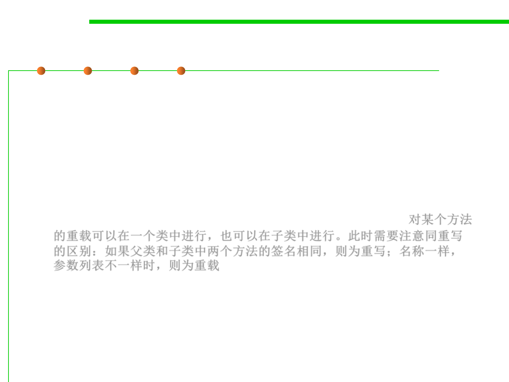

Overloading rules
3.4 Object-Oriented Programming (OOP)
▪ Rules in function overloading: the overloaded function must differ
either by the arity(参数数量) or data types
– Overloaded methods MUST change the argument list.
– Overloaded methods CAN change the return type.
– Overloaded methods CAN change the access modifier.
– Overloaded methods CAN declare new or broader checked exceptions.
– A method can be overloaded in the same class or in a subclass. 对某个方法
的重载可以在一个类中进行，也可以在子类中进行。此时需要注意同重写
的区别：如果父类和子类中两个方法的签名相同，则为重写；名称一样，
参数列表不一样时，则为重载